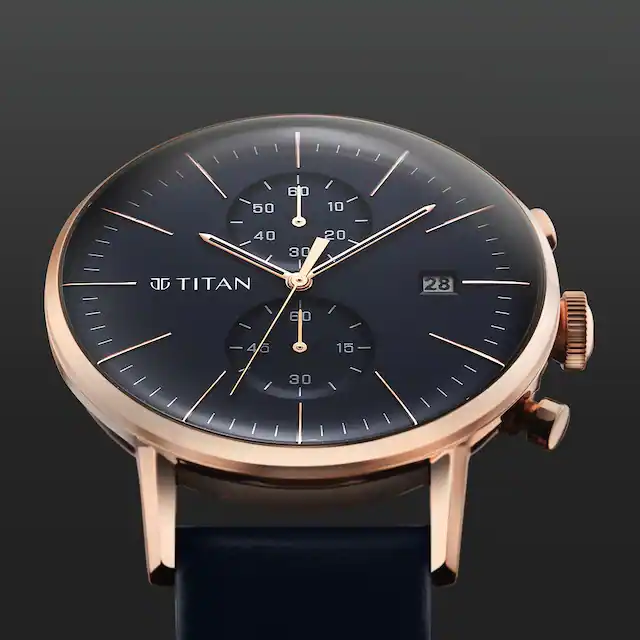
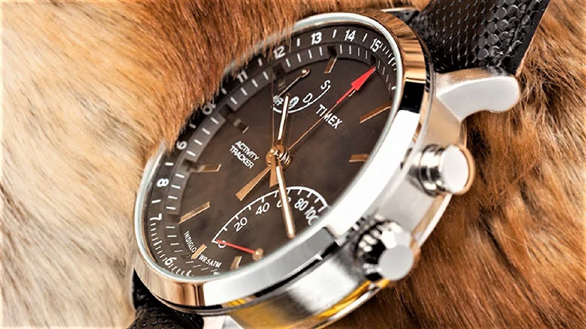
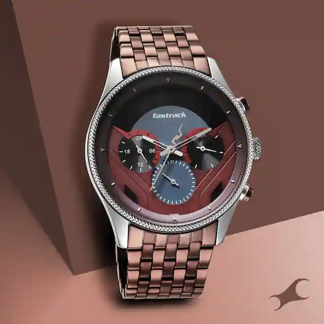

<!doctype html>
<html lang="en">

<head>
    <!-- Required meta tags -->
    <meta charset="utf-8">
    <meta name="viewport" content="width=device-width, initial-scale=1">

    <!-- Bootstrap CSS -->
    <link href="https://cdn.jsdelivr.net/npm/bootstrap@5.0.2/dist/css/bootstrap.min.css" rel="stylesheet"
        integrity="sha384-EVSTQN3/azprG1Anm3QDgpJLIm9Nao0Yz1ztcQTwFspd3yD65VohhpuuCOmLASjC" crossorigin="anonymous">

    <title>watches</title>
    <style>
        /* Style for the footer */
        footer {
            background-color:black;
            color: #fff;
            padding: 20px;
            text-align: center;
        }

        /* Style for the links in the footer */
        footer a {
            color: #fff;
            text-decoration: none;
            margin: 0 10px;
        }
    </style>
</head>

</html>

<body>
    <script src="https://cdn.jsdelivr.net/npm/bootstrap@5.0.2/dist/js/bootstrap.bundle.min.js"
        integrity="sha384-MrcW6ZMFYlzcLA8Nl+NtUVF0sA7MsXsP1UyJoMp4YLEuNSfAP+JcXn/tWtIaxVXM"
        crossorigin="anonymous"></script>
    <!-- navbar -->
    <nav class="navbar navbar-light">
        <div class="container-fluid">
            <a class="navbar-brand" href="#">
                
                WATCHES
            </a>
        </div>
    </nav>
    <!-- navbar -->
    <div class="container-fluid d-flex justify-content-center">
        <ul class="nav nav-pills">
            <li class="nav-item">
                <a class="nav-link " aria-current="page" href="#">HOME</a>

            </li>
           
            <li class="nav-item dropdown">
                <a class="nav-link dropdown-toggle" data-bs-toggle="dropdown" href="#" aria-expanded="false">BRANDS</a>
                <ul class="dropdown-menu">
                    <li><a class="dropdown-item" href="boot1.html">BRANDED</a></li>
                    <li><a class="dropdown-item" href="BOOT2.HTML">UNBRANDED</a></li>
                    
                    <li>
                </ul>
            </li>
            <li class="nav-item">
                <a class="nav-link" href="CONT.HTML">CONTACT US</a>
            </li>
            
        </ul>
    </div>
    <!-- home -->
    <div class="container w-50">
        <div class="card mb-3">
            
            <div class="card-body">
                <h5 class="card-title">Titan</h5>
                <p class="card-text">The first factor is quality. These watches are made with only the highest-quality
                    materials, such as stainless steel, titanium, and sapphire crystal glass. This ensures that each
                    watch is durable and long-lasting, making it a worthwhile investment.
                    .</p>
                <p class="card-text"><small class="text-muted">Last updated 3 mins ago</small></p>
            </div>
        </div>
    </div>
    <div class="container w-50">
        <div class="card mb-3">
            
            <div class="card-body">
                <h5 class="card-title">Timex</h5>
                <p class="card-text">
                <p>Timex Group designs, manufactures and markets innovative timepieces and jewelry globally. Timex,
                    founded in 1854, has expanded to become Timex Group, a privately-held company, with several
                    operating units and over 5,000 employees worldwide</p>
                <p>Our vision is to inspire and empower generations of creative minds, to impact and influence the world
                    of fashion.</p>
                <p class="card-text"><small class="text-muted">Last updated 3 mins ago</small></p>
            </div>
        </div>
    </div>
    <div class="container w-50">
        <div class="card mb-3">
            
            <div class="card-body">
                <h5 class="card-title">Fastrack</h5>
                <p class="card-text">Fastrack is an Indian fashion accessory retail brand, launched in 1998 as a
                    sub-brand of Titan Watches
                <p> Fastrack is one of the most famous watch brands on the market and is known for its high-quality
                    watches, unique fashion statements, and affordable prices.15-Feb-2023</p>

                <p class="card-text"><small class="text-muted">Last updated 3 mins ago</small></p>
            </div>
        </div>
    </div>

    
    
    <footer>
        <div class="container">
            <div class="row">
                <div class="col-md-4">
                    <h4>About Us</h4>
                    <p>Address: Road No. 2, Park View Enclave, Jubilee Hills, Hyderabad, Telangana 500045</p>
                </div>
                <div class="col-md-4">
                    <h4>Quick Links</h4>
                    <ul>
                        <li><a href="newboot.html">Home</a></li>
                        <li><a href="boot1.html">brands</a></li>
                        <li><a href="BOOT2.HTML">UNBRANDED</a></li>
                        <li><a href="CONT.HTML">Contact Us</a></li>
                    </ul>
                </div>
                <div class="col-md-4">
                    <h4>Contact Us</h4>
                    <p>Email: info@yourwatches.com</p>
                    <p>Phone: +1 (123) 456-7890</p>
                </div>
            </div>
        </div>
    </footer>
</body>
</html>


